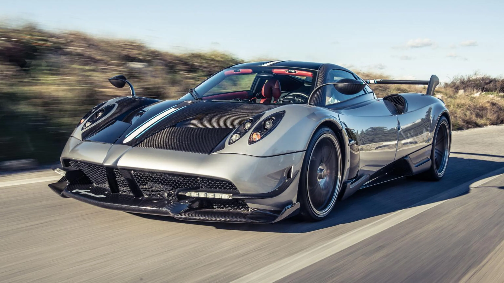

Ferrari
Ferrari es una de las marcas de autos hyperdeportivos más icónicas del mundo. Fundada en 1947, Ferrari es conocida por su elegante diseño y su rendimiento excepcional.


Lamborghini
Lamborghini es otra marca legendaria de autos hyperdeportivos. Fundada en 1963, Lamborghini es famosa por sus autos de alto rendimiento y diseño futurista.


Pagani
Pagani es una marca italiana de automóviles deportivos de alto rendimiento. Fundada en 1992 por Horacio Pagani, la compañía es conocida por su artesanía excepcional y sus diseños exclusivos. Cada automóvil Pagani es una obra maestra de ingeniería y estilo, y su atención al detalle es incomparable.
